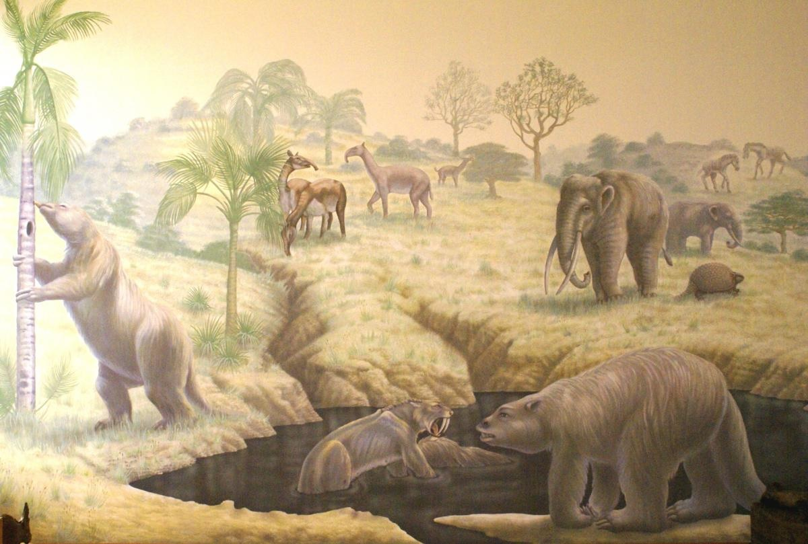

MUSEO PALEONTOLÓGICO MEGATERIO
Considerado el primer Museo de corte Paleontológico del Ecuador, presenta una propuesta museística moderna y relevante de la Provincia de Santa Elena, que combina lo científico y educativo con la exposición de restos de Megafauna del Pleistoceno Tardío (50000 a 10000 a.p.), encontrados en el sector Tanque Loma del Cantón La Libertad, en uno de los yacimientos de fósiles más grande e importante de América del sur.
MISIÓN Y VISIÓN
MISION:
Mostrar un producto atractivo, deiferenciado e innovador, a través de la exhibición e interpretación investigativa y eduactiva de sus colecciones, proporcionandole identidad y valor agregado en el campo turístico, al gran recurso patrimonial que posee la Provincia de Santa Elena.
VISIÓN:
El museo paleontológico Megaterio, considerado el mayor referente Patrimonial del Ecuador, debido a las acciones de investigación, conservacion y difusión de la fauina fósil mas trancendental hallada en esta parte del continente Americano, fortaleciendola valoración del Patrimonio Paleontológico - Cultura de la Nación, posicionado en el ámbito cientifífico y turístico a nivel Mundial.
¿QUÉ ENCONTRAS?
Una breve introducción histórica del hallazgo, de la época en la que vivieron los animales de la Megafauna (Pleistoceno) y su distribución en el Continente americano.

Restos líticos y otro tipo de evidencia como huellas de corte en los huesos y clasificación de presas, que supone la existencia del hombre en la época que vivieron los animales de la Megafauna.
